Logiciel pour la Segmentation des Matériaux
Technologies utilisées: Python, PyTorch, U-Net, PyCharm, Google Colab
Plus de détails techniques ont été ajoutés, lisez-les si cela vous intéresse ! Sinon, vous pouvez revenir à la « Version Simplifiée » à tout moment !
Introduction
Au cours de nos études, notre équipe a été chargée de développer une application web permettant à l'utilisateur d'effectuer une segmentation des données à l'aide de son navigateur web. Nous avons développé différentes méthodes de segmentation à l'aide d'outils tels que OpenCV, PyTorch et PyTorch Image. L'utilisateur pouvait sélectionner la méthode parmi les options proposées et effectuer la segmentation de l'image via l'interface fournie par l'application.
Comme données d'entrée, nous avons reçu deux ensembles contenant 500 images de 256 x 256 pixels représentant des parties d'images microscopiques de coupes transversales de stratifiés composites en fibre de carbone.
Les ensembles de données contenaient les masques correspondants pour chaque image. Chaque pixel était annoté par classe : matériau matriciel, fibre ou vide. Les ensembles de données fournis ont été utilisés pour former, valider et tester les modèles de segmentation développés.
Nous avons également développé un logiciel pour traiter et analyser les données saisies. Une application web a été créée pour faciliter l'accès aux fonctionnalités du logiciel via une interface web. Le déploiement du logiciel basé sur Docker a été effectué afin d'assurer son isolation et son évolutivité.
../../../../images/images-projects/khpi/materials-segmentation/
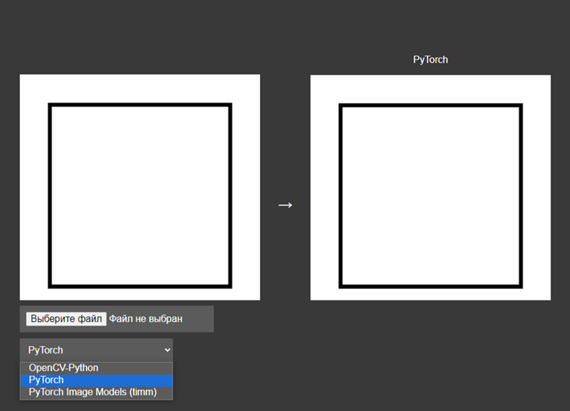
Interface de l'application web développée
Répartition du travail
Notre travail a été divisé en quatre parties, chaque membre de l'équipe travaillant sur sa partie individuelle : trois développeurs Python et un spécialiste Docker. En tant que développeurs Python, nous avons travaillé sur trois méthodes de segmentation : en utilisant OpenCV, en utilisant uniquement PyTorch et en utilisant la bibliothèque Image Segmentation Models. Le spécialiste Docker était responsable du logiciel et du déploiement de l'application web.
Tout au long du projet, j'ai travaillé sur la partie Modèles de segmentation d'images, dont vous pouvez consulter le référentiel ici.
Vous trouverez ici un exemple des données fournies et du résultat obtenu à l'aide du modèle de segmentation entraîné :
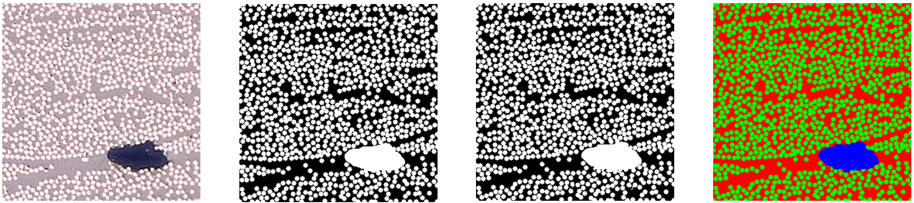
Image d'entrée – Masque original – Masque fourni par le modèle développé – Trois classes définies
PyTorch Image Segmentation Models
Il s'agit d'une extension de la bibliothèque PyTorch conçue pour travailler avec des images dans le cadre de tâches de vision par ordinateur et de traitement d'images. Cette extension fournit un large éventail d'outils et de fonctions pour le traitement, l'augmentation, la visualisation et l'évaluation des images. PyTorch Image comprend une variété de modules et de classes de traitement d'images, tels que des transformations, des ensembles de données, des modèles, des fonctions de perte et des optimiseurs. L'utilisation de cette extension simplifie le développement et l'entraînement de modèles de vision par ordinateur dans l'environnement PyTorch.
Diagrammes de classes
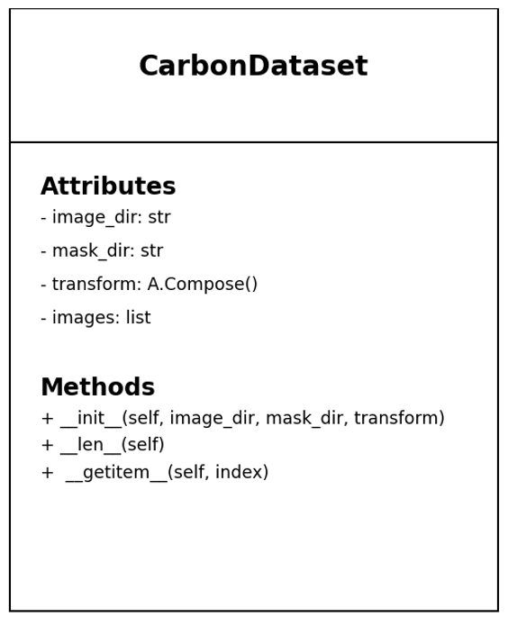
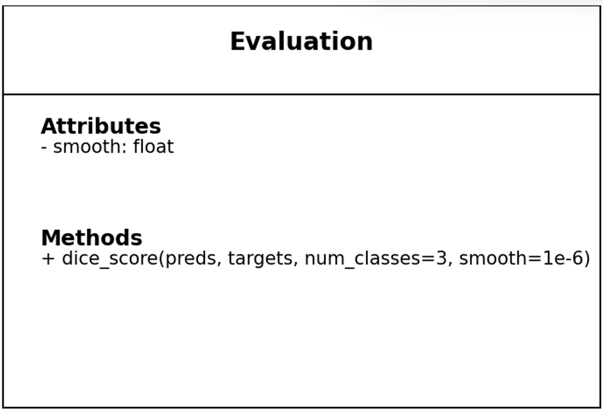
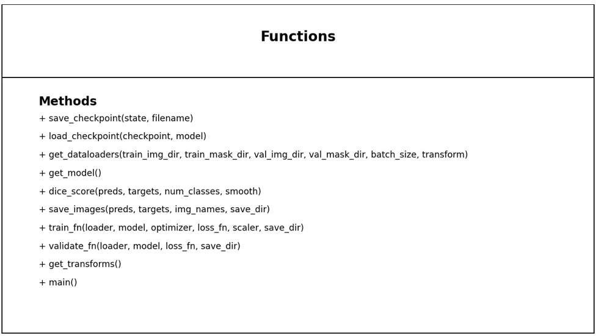
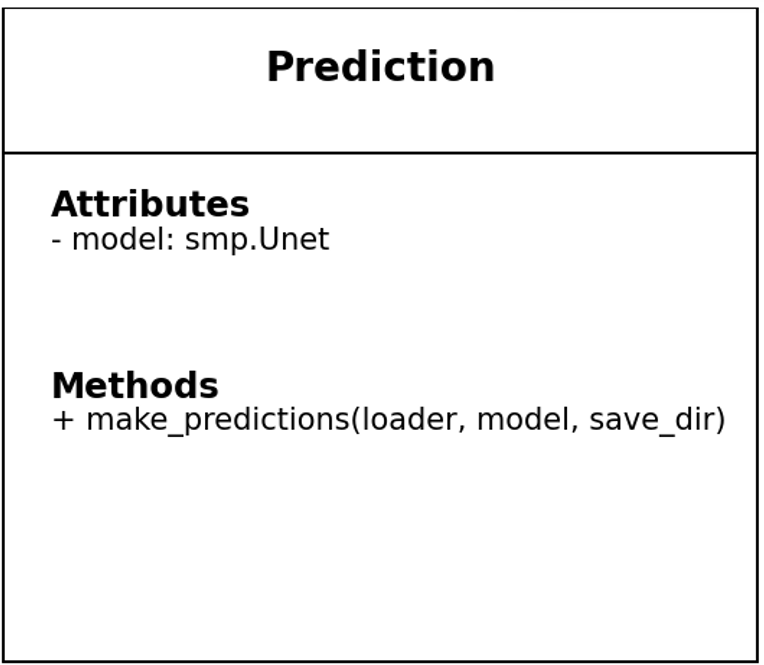
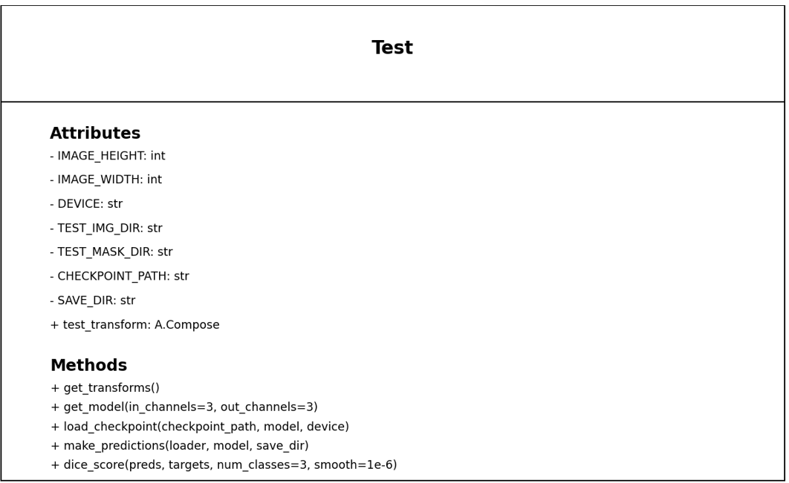
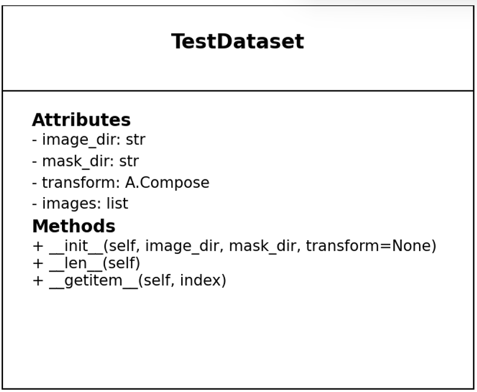
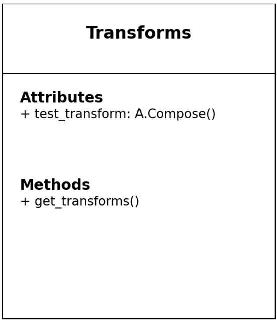
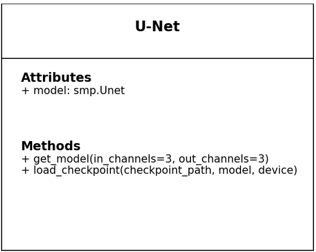
Diagrammes de classes de mon code
U-Net
U-Net est un réseau neuronal convolutif (CNN) développé pour la segmentation d'images. Son architecture a été modifiée et étendue afin qu'il puisse fonctionner avec moins d'images tout en fournissant une segmentation précise. Il évite les couches entièrement connectées et peut traiter des images de tailles variables.
U-Net a une forme en U et se compose de deux parties principales : un encodeur et un décodeur.
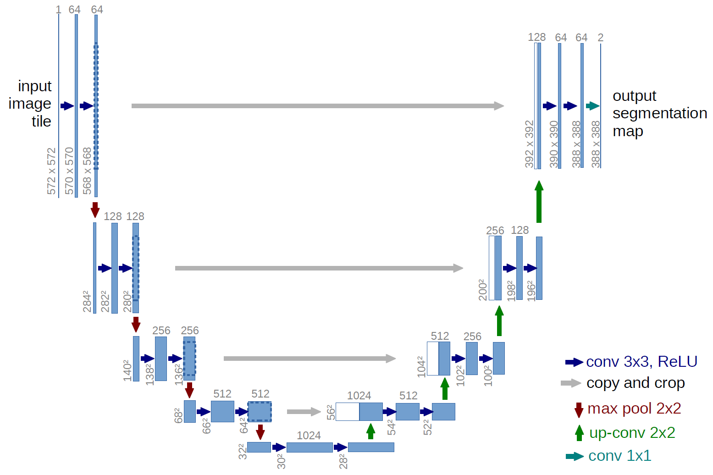
Architecture U-Net
Le chemin contractant (encodeur) est typique des CNN et consiste en une application répétée de convolutions, suivie d'une unité linéaire rectifiée (ReLU) et d'une opération de pooling maximal. Le chemin expansif (décodeur) restaure la résolution spatiale grâce à des convolutions ascendantes et des concaténations avec des caractéristiques haute résolution provenant de l'encodeur.
Réalisation
J'ai divisé le travail en trois étapes, évoluant étape par étape, d'autant plus qu'il s'agissait de mon premier projet d'envergure. Les première et deuxième étapes ont été réalisées dans PyCharm, le modèle ayant été entraîné localement sur mon ordinateur.
La troisième et dernière étape a été réalisée dans Google Collaboratory, ce qui impliquait de travailler avec des notebooks Jupyter, pour lesquels j'ai dû réécrire mon code local. J'ai réduit cinq fichiers à deux fichiers principaux (codes), l'un pour l'entraînement du modèle et l'autre pour tester le modèle final qui sera utilisé dans l'application web.
Premier fichier : modèle de segmentation d'entraînement
Dans un premier temps, j'ai indiqué tous les paramètres du modèle, tels que le taux d'apprentissage, le nombre d'époques pendant lesquelles le modèle apprendra, la taille des images et les chemins d'accès aux répertoires contenant les ensembles de données qui seront utilisés pendant l'entraînement et la validation du modèle.
Différentes classes et fonctions ont été écrites, telles qu'une classe pour charger des images et des masques, ou des fonctions pour enregistrer et charger le modèle, ainsi qu'une fonction pour entraîner le modèle pendant un nombre d'époches indiqué et enregistrer les images résultantes dans leur propre répertoire. Toutes ces fonctions ont été combinées dans la fonction principale.
Plus précisément, la classe CarbonDataset a été créée pour charger les images et les masques correspondants, puis elle prépare les données chargées pour l'entraînement, en appliquant des transformations et en les convertissant en tableaux.
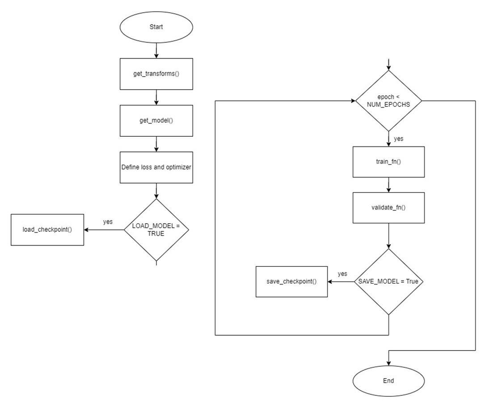
Organigramme de la formation du modèle
La fonction nommée get_model configure le modèle conformément à la documentation de la bibliothèque Segmentation Models. Le réseau U-Net est également initialisé, et ResNet18 a été utilisé comme encodeur pour cette partie du projet. La fonction get_dataloaders est chargée de charger les ensembles de données d'entraînement et de validation.
La fonction train_fn effectue une période d'apprentissage du modèle, suivie de la fonction validate_fn qui effectue la validation du modèle. La perte et le score Dice sont calculés. Les résultats sous forme de masques et de prédictions sont ensuite stockés.
Passons au deuxième fichier : test du modèle de segmentation.
À l'origine, l'ensemble de données de départ était divisé en différentes parties. Certaines images ont été placées dans un répertoire destiné uniquement à tester le modèle déjà entraîné. Leurs masques ont également été stockés afin de les comparer aux résultats que le modèle nous donnera lors des tests. Nous calculons également le score Dice, qui correspond à la similarité entre le résultat du modèle et les masques pour chaque classe. Un exemple du fonctionnement du modèle est présenté ci-dessous :
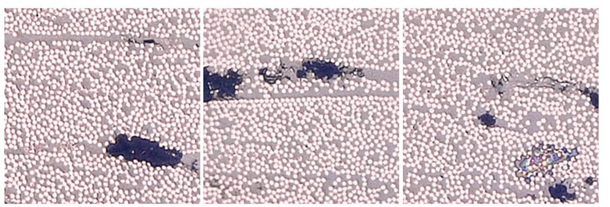
Trois images d'entrée originales
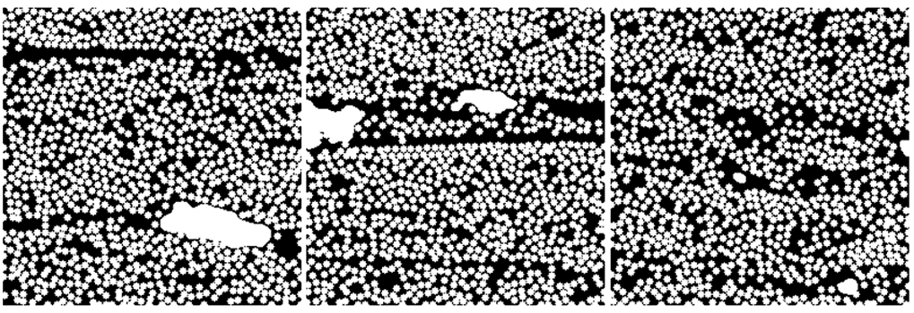
Trois masques correspondants provenant de l'ensemble de données
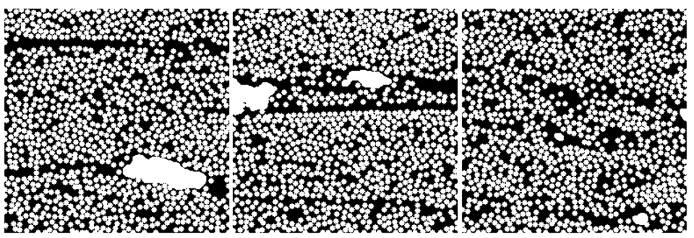
Trois masques correspondants, obtenus par logiciel [par modèle de segmentation]
Pour ce code, comme précédemment, je définis tout d'abord des paramètres tels que la taille des images, les chemins d'accès aux images, le chemin d'accès au modèle et l'emplacement où stocker les prédictions. La classe TestDataset était chargée de créer un ensemble de données pour tester le modèle. Autrement dit, elle accepte les chemins d'accès aux images et à leurs masques, qui sont ensuite utilisés pour déterminer le score Dice, effectue des transformations simples sur les images, après quoi une image avec un masque est renvoyée.
La fonction get_transforms transforme l'ensemble de données utilisé pour les tests : un redimensionnement et une normalisation sont effectués. La fonction get_model crée un modèle U-Net, et la fonction suivante charge le point de contrôle du modèle enregistré.
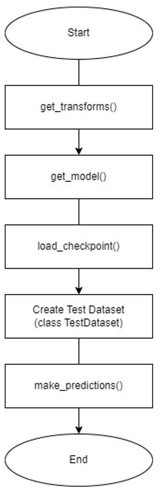
Organigramme des essais sur modèle
La fonction dice_score effectue le calcul du score Dice. Vient ensuite la fonction make_predictions, qui effectue des prédictions pour l'ensemble de données de test donné et stocke également le résultat final. Un score Dice est calculé pour chaque image, et à la fin, le score Dice moyen s'affiche à l'écran.
Résultats
Comme mentionné précédemment, dans ce projet, la perte et le score aux dés ont été utilisés.
La perte est une valeur numérique qui mesure l'écart entre les prédictions du modèle et les valeurs cibles réelles. Si la perte est faible, cela signifie que les prédictions sont proches des valeurs réelles, tandis qu'une perte élevée indique que les prédictions sont inexactes.
Ci-dessous, vous pouvez voir le graphique des pertes pour les ensembles d'entraînement et de validation, où le bleu représente la perte d'entraînement et l'orange la perte de validation :
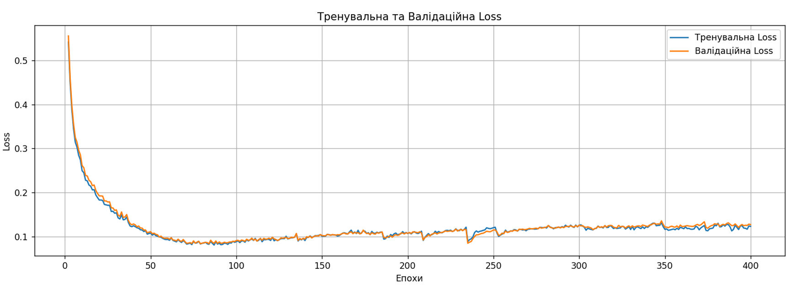
Graphique des pertes pour les ensembles de données d'entraînement et de validation
Pour évaluer toutes les méthodes développées pour ce projet, nous avions besoin d'un système de notation. Après recherche, le score des dés a été calculé à la fin des tests et utilisé pour la comparaison avec d'autres méthodes.
Nous avons également calculé le score Dice pendant l'entraînement et la validation, comme vous pouvez le voir sur le graphique ci-dessous, où le bleu correspond au score Dice de l'entraînement et l'orange au score Dice de la validation :

Graphique des scores Dice pour les ensembles de données d'entraînement et de validation
La formule de calcul des points aux dés est simple et vous pouvez la consulter ici :
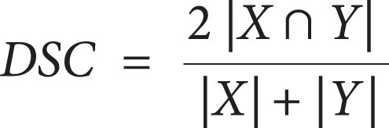
Formule de calcul du score aux dés
Il est égal à 2 multiplié par le nombre d'éléments communs, divisé par le nombre d'éléments dans l'ensemble X plus le nombre d'éléments dans l'ensemble Y. Pour simplifier, X est la prédiction, c'est-à-dire le résultat de mon modèle, et Y est le masque provenant de l'ensemble de données d'origine.
Vous trouverez ci-dessous le score obtenu pour l'ensemble de données de test utilisé lors du test du modèle :
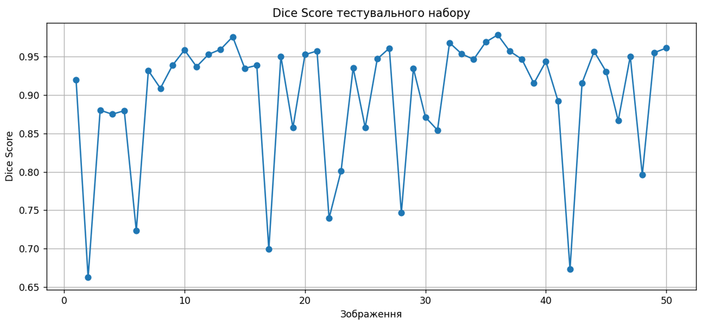
Score Dice de l'ensemble de données de test
Pour ce test, nous ne disposions que de 50 images. Le graphique montre des résultats mitigés, étant donné que la valeur maximale possible pour le score au dé est 1, ce qui signifie la perfection et est impossible à obtenir. À la fin du test, nous avons obtenu le score moyen au dé pour ce test :
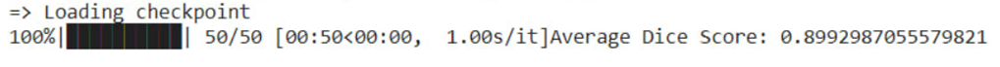
Score moyen aux dés - résultat direct après avoir effectué le test
Le modèle a été entraîné pendant environ 2 heures et a obtenu un score de 0,89, ce qui est un bon résultat et le plus élevé parmi les trois méthodes développées. Dans le même temps, mon modèle a été celui qui a nécessité le plus de temps pour être entraîné.
Vous pouvez trouver le référentiel du projet via ce GitHub lien.